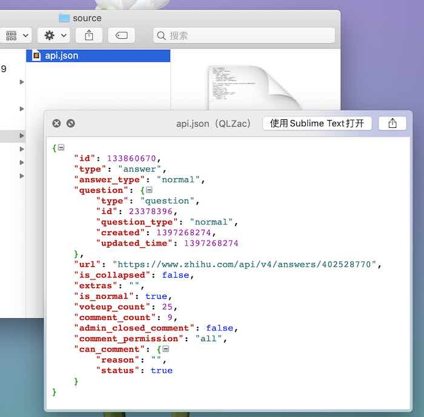
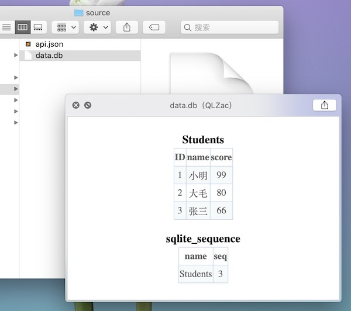
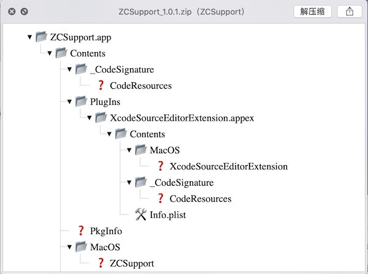
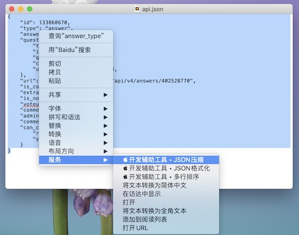
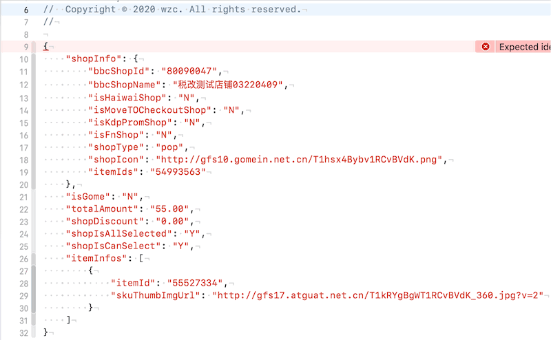
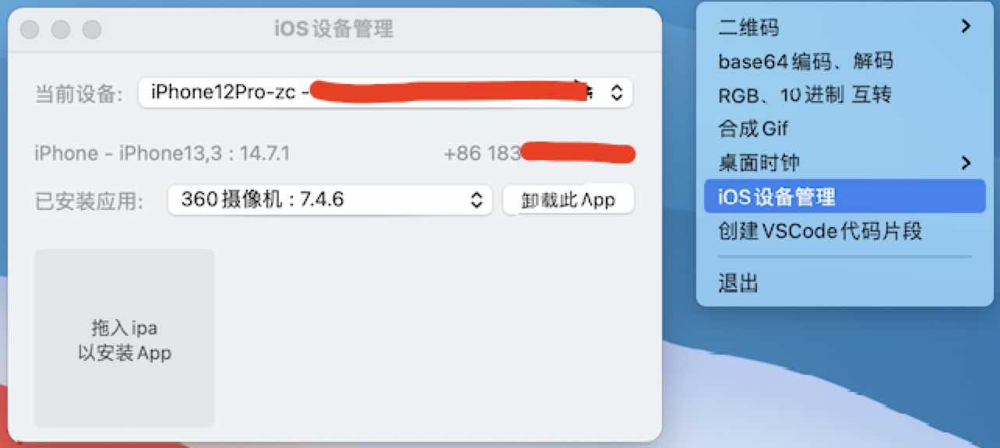

下载地址：
包含以下功能
1、预览 拓展名为db、db3、sqlite、sqlite3的数据库文件:

2、预览 拓展名为json、jsp的json文件:

3、预览 拓展名为zip、ipa的压缩文件:

1、可以将JSON压缩、格式化:

2、Xcode中可以将Json转换为model对象:

3、多行文本排序
4、Xcode中可以转换字符串大小写
1、Cocoapods快捷支持：pod install
1、扫描屏幕二维码:
2、生成二维码(二维码可以拖出到桌面):
3、iOS设备管理（安装、卸载app）:

4、Base64编码、解码
5、RGB 预览、10进制互转
6、iPhone模拟器管理
7、合成gif
tell application "ZCSupport"
set testString to "{\"a\":\"b\"}"
set returnValue to read JSON from testString
set what to a of returnValue
end tell